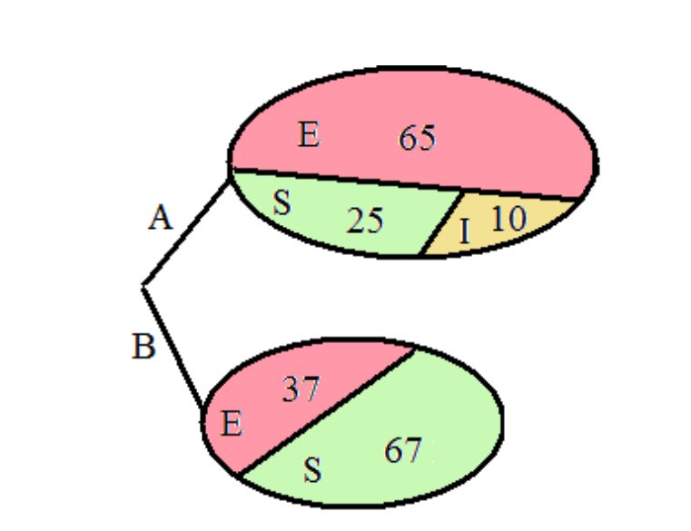
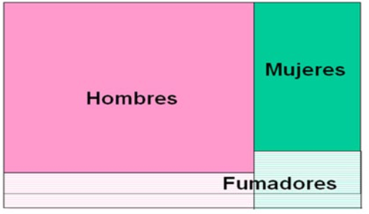
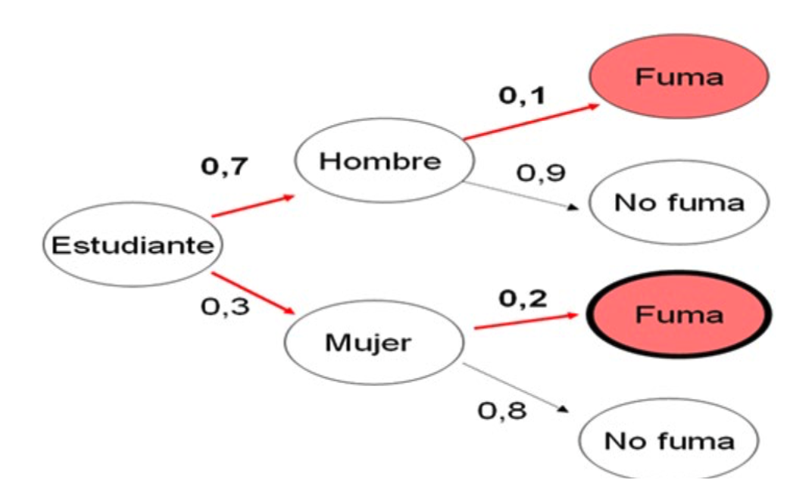

Chapter 4 Probabilidad
4.1 Ejercicio 1
EJEMPLO
Nombre <- c("B.R.", "C.C", "C.G", "G.P", "M.P", "J.L", "L.A", "N.D", "V.C", "V.F", "L.L", "J.N", "J.P", "U.P")
Sexo <- c("H", "M", "H", "M", "M", "H", "M", "M", "H", "H", "H", "M", "M", "M")
Edad <- c(18, 19, 19, 20, 21, 20, 21, 21, 22, 19, 18, 21, 21, 18)
# Combine variables into a data frame
dt <- data.frame(Nombre, Sexo, Edad)
table(Sexo)## Sexo
## H M
## 6 84.2 Ejercicio 2
EJEMPLO
# Se crea la tabla de contingencia
dat <- matrix(c(60, 8, 68, 140, 792, 932, 200, 800, 1000), nrow = 3, byrow = TRUE)
# Se añaden los nombres a las filas y columnas
rownames(dat) <- c("Glocosaria", "No Glucosaria", "Total")
colnames(dat) <- c("Diabetes", "No Diabetes", "Total")
# Visualizamos la tabla
print(dat)## Diabetes No Diabetes Total
## Glocosaria 60 8 68
## No Glucosaria 140 792 932
## Total 200 800 1000## [1] 0.068## [1] 0.2## [1] 0.3## [1] 0.01## [1] 0.7## [1] 0.0136## [1] 0.064.3 Ejercicio 3
EJEMPLO
Un médico de pueblo tiene la misma probabilidad de visitar el pueblo A que el B, tras un brote de gripe, en el pueblo A hay gente enferma, incubando con síntomas leves la enfermedad o sana y en el B sólo hay gente enferma y sana. Si el médico solo visita a un paciente de forma aleatoria. Define el especio muestral. Calcular la probabilidad de: a) visitar a un enfermo, b) visitar a un individuo incubando la enfermedad.

P(E)=(AE,AI,AS,BE,BS)
## [1] 0.5028846## [1] 0.054.4 Ejercicio 4
EJEMPLO


\(P(Fumar)= P(Hombre\;|\;Fumar) + P(Mujer\;|\;Fumar) =\)
\(= P(Fumar\;|\;Hombre)\;x\;P(Hombre)\;+\;P(Fumar\;|\;Mujer)\;x\;P(Mujer)=\)
## [1] 0.13\(P(Mujer\;|\;Fumar)= \frac{P(Mujer\;\cap\;Fumar)}{P(Fumar)}=\frac{P(Fumar\;|\;Mujer)\;x\;P(Mujer)}{P(Fumar)}\)
## [1] 0.46153854.5 Ejercicio 5
EJEMPLO
Con el siguiente ejemplo vamos a calcular la probabilidad de sacar 1, 2, 3, 4, 5 y 6 en un dado.
# Definimos el número de tiradas
num_rolls <- 10000
# Simulamos en lanzamiento de una dado justo de 6 caras.
results <- sample(1:6, num_rolls, replace = TRUE)
# Contamos el resultado que obtenemos de cada lanzamiento.
counts <- table(results)
# Calculamos la probabilidad
probabilities <- counts / num_rolls
# Presentamos los resultados
for (i in 1:6) {
print(paste("La probabilidad de conseguir un", i, ":", probabilities[i]))
}## [1] "La probabilidad de conseguir un 1 : 0.171"
## [1] "La probabilidad de conseguir un 2 : 0.1721"
## [1] "La probabilidad de conseguir un 3 : 0.1668"
## [1] "La probabilidad de conseguir un 4 : 0.1588"
## [1] "La probabilidad de conseguir un 5 : 0.1663"
## [1] "La probabilidad de conseguir un 6 : 0.165"4.6 Ejercicio 6
EJEMPLO
- Ejemplo unión o suma: P(A∪B) = P(A) + P(B) - P(A∩B)
- Evento A: Obtener un número par en un dado justo de seis caras.
- Evento B: Obtener un número mayor que 3 en el mismo dado.
# Simulando el lanzamiento de un dado justo de seis caras.
n_simulations <- 100000 # número de simulaciones
rolls <- sample(1:6, n_simulations, replace = TRUE)
# Definición de los eventos A y B
event_A <- rolls %% 2 == 0 # números pares
event_B <- rolls > 3 # números mayores que 3
# Cálculo de probabilidades de eventos A y B
probability_A <- sum(event_A) / n_simulations
probability_B <- sum(event_B) / n_simulations
# Cálculo de la interseccón de los eventos A y B
probability_intersection <- sum(event_A & event_B) / n_simulations
# Utilización de la propiedad P(A∪B) = P(A) + P(B) - P(A∩B) para el cálculo de la suma
probability_union_formula <- probability_A + probability_B - probability_intersection
# Mostrar resultados
cat("Probability of A:", probability_A, "\n")## Probability of A: 0.49917## Probability of B: 0.49869## Probability of (A ∩ B): 0.33091## Probability of (A ∪ B) using formula: 0.66695- Ejemplo intersección o producto: P(A∩B)=P(A)+P(B)−P(A∪B)
# Definir el espacio muestral para un dado individual.
sample_space <- 1:6
# Definir el Evento A: Obtener un número par en el primer dado.
event_A <- c(2, 4, 6)
# "Definir el Evento B: Obtener un número mayor que 3 en el segundo dado.
event_B <- c(4, 5, 6)
# Calcular probabilidades
P_A <- length(event_A) / length(sample_space)
P_B <- length(event_B) / length(sample_space)
# Calular la unión de los eventos A y B
event_union <- union(event_A, event_B)
P_union <- length(event_union) / length(sample_space)
# Calcular la intersección de los eventos A y B
P_intersection <- P_A + P_B - P_union
# Mostrar resultados
cat("P(A) =", P_A, "\n")## P(A) = 0.5## P(B) = 0.5## P(A∪B) = 0.6666667## P(A∩B) = 0.3333333